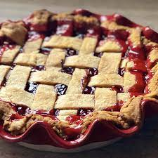

Cherry Pie

Description
A delicious fresh cherry pie.
Ingredients
- 1 (15 ounce) package double crust ready-to-use pie crust
- 3 cups cherries, pitted
- 3/4 cup white sugar
- 3 tablespoons cornstarch
- 3/4 teaspoon almond extract
- 2 tablespoons salted butter, cut into bits
Steps
- Preheat oven to 400°F. Line a baking sheet with aluminum foil. Place bottom pie crust
into a 9-inch pie pan; made pricks along the bottom with a fork.
- Bake in the preheated oven until pie crust is lightly browned, about 8 minutes. Remove crust from oven and cool
for 5 minutes.
- Combine cherries, sugar, cornstarch, and almond extract together in a bowl. Pour cherry mixture into the
prepared pie pan; dot with butter. Cover with top crusts, crimp the edges to seal, and cut vents into the top with
a sharp knife. Place the pie on a foil-covered baking sheet.
- Bake in the preheated oven for 30 minutes. If it is browning too fast cover the pie with an aluminum foil tent.
Continue baking until crust is golden brown and filling is bubbly, 10 to 20 minutes. Place on a wire rack to cool,
about 15 minutes.